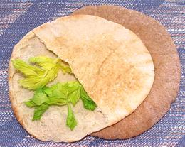

SAFARI
Users
Making Bread
Tandoor
- [Tandoor (India); Toné (Georgia); Tonir (Armenia); Tannur (Arabic)]Clay and brick pit ovens have been used throughout the region of Anatolia, Caucasus, Western and Southern Asia for at least 5000 years. The photo shows a bakery size oven in Georgia, but they come in many smaller sizes. They are usually quite deep, and at least partially embedded in the ground or a solid masonry structure. The internal temperature, fired by wood or charcoal, is normally well above 550°F/290°C, but usually is kept below 800°F/425°C. Large bakery tandoors are now often gas fired. Bread is slapped on the wall of the tandoor where it sticks and bakes very quickly. It is then removed using a pole with a hook on it. Photo by Vinisfera.Pl contributed to the public domain .
In India, the Tandoor is a community or restaurant device due to
the expense of building and operating it, but in Armenia, Georgia, and
parts of Central Asia, traditional homes had at least a small one,
usually in a shed separate from the house. Bread baked in a traditional
Tandoor will be thicker on one side than the other, or stretched a bit
due to drooping on the vertical surface. Here in Southern California,
production bakeries have installed industrial tandoors which produce
breads that are not curved, and are more even in thickness.
Varieties of Bread
Lavash
- [(Armenia); Lavashi (Georgian)]This bread originated in Armenia, but is now much used also in Georgia, Azerbaijan, Turkey, Iran, Kashmir, and, of course, Southern California. It is fairly soft and very flexible as baked, making it excellent for wraps. It dries quickly, and in Armenia it is often dried and stacked for months until needed, then reconstituted by sprinkling with water. It also has many uses in the dried form.
This bread is also made in whole wheat versions and in sizes much
larger than the photo specimen. The photo specimen was 33-1/2 inches
long, 12 inches wide and about 0.035 inch thick. The sheet weighed
4-3/4 ounces. Flour, water, salt, yeast. 2013 US $1.99 / pound. The
specimen was made by Colorado Quality Bakery. That's not the state
Colorado, of course, but Colorado Boulevard in Glendale.
Matnakash
- [Matnakash (Armenia)]
This firm, yeast leavened bread is made throughout Armenia and Turkey,
though in Turkey the inscribed pattern may be different. The photo
specimen was 13 inches long, 9 inches wide and about 1-7/8 inches thick,
weighing 1 pound 7 ounces. Flour, yeast, salt, water, made in Glendale,
California.
Barbari Bread
- [Nan-e Barbari (Persian)]
This is the main bread of Persia (Iran). I suspect it has gone a bit
north as well, because the Armenian bakeries in Glendale churn it out
in quantity. The photo specimen was 22-1/2 inches long, 6-1/2 inches
wide and 1-1/2 inches thick, weighing 1 pound 3 ounces. Unlike Matnakash
it is usually sprinkled with sesame seeds. Flour, yeast, salt, water,
sesame seeds.
Deda's Puri
- [Georgian; Mother's Dough (English)]
This is a very common bread in Georgia, where it would be baked in a
tandoor oven. It always has the hole in the middle to keep it from
puffing up too much (tandoors are very hot so browning is very fast and
thick loaves wouldn't bake through). The crust is fairly soft. The photo
specimen, baked in Glendale, of course, was 12 inches diameter, 1-7/8
inches thick, and weighed 1-1/2 pounds. For serving it would be cut into
slices about 1-1/2 inches thick.
Shotis Puri
- [Georgian; Shotti Bread (Glendale)]This is a very popular bread in Georgia, where it would be baked in a tandoor oven. It always has narrow "handles" at the ends and a depression in the center, but otherwise shape varies considerably from bakery to bakery. Length depends on the diameter of the tandoor, the larger the oven the longer the shotis that can be made in it. The shape results from the traditional method of forming the loaf. First it is pulled long, holding by the ends. Then it is patted out wide in the middle, and a depression is made in the center so it will not become too thick. It is stretched over a fabric covered form to aid in slapping it onto the hot wall of the tandoor. At a temperature of around 350°C/660°F It browns in around 10 minutes and is fetched off the wall with a long hook and spatula. For serving, slices are cut about 1-1/2 inch thick.
In Glendale, California, it is made quite large, so as to be the
standard 1 pound weight expected of breads here. Of course, made in
Georgia it is smaller, much more rustic looking, and curved from the
tandoor wall. The many Armenian bakeries here in Los Angeles County
use industrial tandoors, so the size is not limited by oven diameter
and the loaves are not curved. The photo specimen was 24-1/2 inches
long, 6-1/2 inches across and 1-1/2 inches thick, with a thin, fairly
soft crust. It was made by Glendale Fine Bakery: wheat flour (non GMO),
yeast, salt, water.
Naan
This is a very popular lightly leavened Tandoori bread in northwest India, through Iran and on to the Caucasus. The photo specimen was made in Los Angeles, California, where it is available both fresh and frozen. We have a substantial South Asian population here and the ladies don't have the time or the communal Tandoor found in India, so they appreciate these.
The loaf to the right in the photo was as purchased fresh, and the
one to the left I toasted it in my home Tandoor, consisting of a large
ceramic floor tile in a 575°F/300°C oven. It was browned well in
3 minutes. These measured 7 inches diameter by 0.4 inch thick and weighed
2-7/8 ounces (after toasting). Enriched wheat flour, water, whole wheat
flour, soybean oil and yeast.
Non - Uzbek
This is a tandoor baked bread that is extremely popular in Uzbekistan, Tajikistan, and Kazakhstan. It is often more fancily decorated than the simple loaf in the photo, and can have an oil glaze on the top side. Non can also have onions, nigella, or other toppings spread on it before baking. Photo by Ji-Elle distributed under license Creative Commons Attribution-ShareAlike v4.0 International.
Maneesh
- [Man'oushe, Za'atar Flatbread]
This bread is very popular in Lebanon. It is a loaf similar to Naan,
coated with a Za'atar spice mix (za'atar (a kind of wild thyme), sumac
and sesame seeds), then baked in an oven similar to a pizza oven. Other
toppings may be added after it comes out of the oven.
Pita Bread
- [Pita (Greek); Pocket Bread; Pide (Turkey); Khubz Arabi (Arabic)]
This lightly leavened wheat bread is popular in Greece, the Balkans, Cyprus, Turkey, Armenia, the Levant, Egypt, Iran, Pakistan and the Northwest corner of India. The ethnic markets here in the Los Angeles region are piled high with pita, in both white (photo) and whole wheat versions, in the 7 inch and larger sizes.
The earliest Arabic recipes (10th century) have these baked in a Tandoor, but today they are usually made in continuous industrial ovens so as to meet the high demand. Pita is baked in a very hot oven at 450°F/232°C or higher, causing the disk to puff up dramatically. When removed from the oven the disk collapses, but the two sides remain separated, so the bread can be opened into a pocket. Throughout the region, street foods of all kinds are packed into pita pockets.
The photo specimen was a 7 inch diameter disk 0.15 inch thick. Half
the top layer was removed to show the inside. Enriched wheat flour,
water, yeast, salt, calcium propionate.
Pita Bread - Greek
- [Pita (Greek)]
This bread does not have a pocket, in fact it is very much like the
naan bread made by the same Armenian bakery, just a bit different in
surface texture. It's probably made in the same continuous process
"tandoor" the naan is made in. Of course, the earliest records of the
baking of pita have it all made in a tandoor. These were 7-1/4 inch
diameter, 0.32 inch thick and weighted 3-1/4 ounces each, made in
California. Enriched wheat flour, water, soybean oil, yeast, 2% or less
of whey, salt, sugar, dough conditioner, baking powder, sodium propionate.